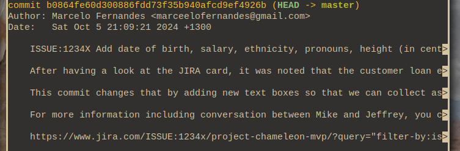
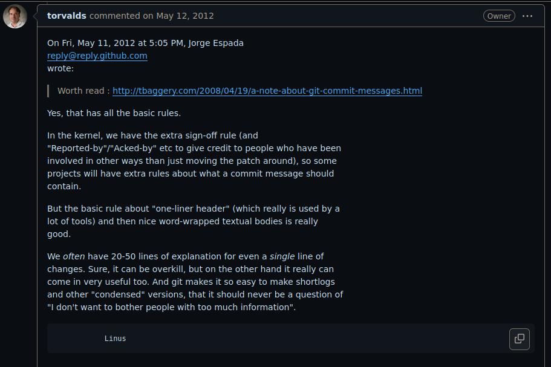

Created at: 2024-10-05
There are two web pages that provide a great summary on Git Commits best practice.
I recommend reading them before going through the rest of this post:
Those articles are "old". One is from 2008 and the other is from 2014. This means that the following occasional comment pops up now and then:
_It's 2024, do we **really** have to restrict ourselves to 72-long commit
titles? I think it's acceptable to simply:_
git -m "ISSUE:1234X Add date of birth, salary, ethnicity, pronouns, height (in centimetres), salary text fields, and more, to the request loan submit form for Chameleon MVP."
_We also have so many good tools around git that make it easier to see the
changes and the diffs. We can also link to rich context on JIRA and Asana,
why are we focusing so much on terminal limitations?_
_We are agile and always fix forward. We never have use for the old bits of
git like git bisect, git revert, or even git log... What do these do
again?!..._
Given that I have little to contribute to the excellent content in the articles above, I'll limit my contribution to talking about the reason these posts have aged so well.
Learning a tool like git takes time. To make the most of git, one needs to learn it well. The same way there are programmers who debug exclusively with print(), there are programmers who only use three git commands: pull, commit, and push.
That is fine. You can go a long way without ever needing more advanced git commands (or debugging tools). That also means, however, that the justifications behind good-practice advice will be harder to understand. I will try to make those clearer in this post even if you don't go beyond these three git commands.
The tragedy of it all, however, is that not knowing those advanced use cases before creating a repository might jeopardise the ability of advanced users to take advantage of good commit etiquette.
Some code bases have a "before good commits" and "after good commits". The "before" is usually a dark place we don't like to go.
Make up your reasons wisely and trust the advice of people who have been there before and learned the hard lessons.
Before going into the reasons why the advice from those posts is still sound, here is a very short summary of the two articles above:
These provide justification for seemingly arbitrary content on the linked blog posts such as _"commit titles should be no longer than 50 characters and commit bodies no longer than 72 characters"._
So commit messages to me are almost as important as the code change itself.
Sometimes the code change is so obvious that no message is really required,
but that is very very rare. And so one of the things I hope developers are
thinking about, the people who are actually writing code, is not just the
code itself, but explaining why the code does something, and why some change
was needed. Because that then in turn helps the managerial side of the
equation, where if you can explain your code to me, I will trust the code...
Linus Torvalds.
Let's start with a bad example:
commit e5b18b256c0f4f5d369c62785248632075790867 (HEAD -> master)
Author: John Doe
Date: Sat Oct 5 18:33:21 2024 +1300
Revamp customer profile page
This commit:
- Refactor ResetPassword form UI to reuse textbox component.
- Add an index to the "users" table to lookup emails faster.
- Apply compression to user's uploaded profile pictures.
- Change hash algorithm for profile picture names.
- Fix broken layout on mobile devices using landscape format.
- Add a new canary flag to control "Under Maintanence" banner.
Although John Doe's commit title evokes the idea that there's only one thing happening, a closer look at the commit description reveals that there are many unrelated changes sneaking in at the same time.
Why is this bad? Let's start with a simple example.
Suppose the third change has a bug:
The profile_update.c file where all the operations for updating a user's profile live has a code-path that crashes the server.
Naturally you want to revert that commit. But in the meanwhile John's colleague Mary has changed one of the UI layout files that John's commit had also touched as part of an unrelated change:
commit 85cf1a1501a2062dbc9310d6b598dcf72e284cbc (HEAD -> master)
Author: Mary Silva
Date: Sat Oct 6 20:45:40 2024 +1300
Upgrade profile page UI layout
This commit:
- Move css classes to the new file "user_layout.css".
- Refactor text boxes to use the same css style.
- Remove unreacheable (dead) JavaScript code.
Now you can't revert John's commit because you got a conflict.
git revert e5b18b256c0f4f5d369c62785248632075790867
CONFLICT (modify/delete): README.md deleted in (empty tree) and modified in
HEAD. Version HEAD of README.md left in tree.
error: could not revert e5b18b2... Revamp customer profile page
The bug in the profile_update.c file has nothing to do with the UI layout in the profile page.
When John added all of those unrelated changes in a single commit, his commit became a conflict magnet. Conflict magnet commits are very hard to revert.
In this case we already knew that John's commit introduced a bug, but what if we didn't? git bisect is a git tool built for finding where a bug was introduced.
To use git bisect you give it two arguments: A "bad" commit that is known to contain the bug (even if not introduced by that commit itself), and a "good" commit that is known to be before the bug was introduced.
The short version of what bisect does is: Bisect will pick a commit between the "bad" and "good" one and ask you whether it's good or bad. It is up to you to decide.
How you do that depends on the project, you might run the test suite with a test that reproduces the bug, or simply look at the diff changes. In each iteration, git bisect shrinks the search window until John's offending commit is found.
Inevitably you find John's commit. However, the commit has two changes in the same profile_update.c file that causes the bug.
- Apply compression to user's uploaded profile pictures.
- Change hash algorithm for profile picture names.
So which of the changes is the bad one?
That question might not be trivial to answer. It might be hard to untangle which change actually broke the code. Specially if the compression algorithm and the hash algorithm use the same underling routines.
Another tool that can't be used as well if multiple changes are present in the same commit is git log -L.
git log -L ::
By running the command above, git will display a diff with all the commits that touched that function in the past.
This presents a way to see the "evolution" of a function over time.
You want commits to be split so that you can see which individual patches changed that function.
Having a single commit with too much noise makes that more difficult to understand why that function changed.
If you are not convinced yet, there are many more git tools that are affected by non-atomic commits. Check the list below and see if may you use any of the following:
git blame: Atomic commits give you the direct answer to: "Why was this change made?"git rebase : For rebasing, dropping changes, re-editing commit messages, or adding fix-ups.git cherry-pick : For applying a specific commit from one branch to another.git diff : For seeing one change at a time.It's reasonable to conclude that one commit per functional change is still relevant today.
Word-wrapping is a property of the text. And the tool you use to
visualize things cannot know. End result: you do word-wrapping at the
only stage where you can do it, namely when writing it. Not when
showing it.
Some things should not be word-wrapped. They may be some kind of
quoted text - long compiler error messages, oops reports, whatever.
Things that have a certain specific format.
The tool displaying the thing can't know. The person writing the
commit message can. End result: you'd better do word-wrapping at
commit time, because that's the only time you know the difference.
(And the rule is not 80 characters, because you do want to allow the
standard indentation from git log, and you do want to leave some room
for quoting).
Linus Torvalds
This is what a long commit looks like with the default pager (less on most Unix systems).

Those white arrows at the right-hand side show where the text was truncated.
Although less supports wrapping text, it may not be on by default depending on how your OS came configured.
Every command that takes the commit summary (top line) truncate and become unreadable. More examples of such commands are found on Tim Pope's blog post.
There isn't much I can add here. I think that it is important to have good writing skills for both commit titles and commit messages with the goal of keeping them succinct and informative at the same time. You can see for yourself how nice Linux's kernel git log reads for inspiration.
The kernel has a restrictive line-length limit.
the ``summary`` must be no more than 70-75 characters.
No text gets wrapped or truncated, and everything is nice and in _good_ style.
It is true that there is no strong evidence about what the "ideal" line-length for coding is. But we know that number for human-readable text:
Research has led to recommendations that line length should not exceed about
70 characters per line. The reason behind this finding is that both very
short and very long lines slow down reading by interrupting the normal
pattern of eye movements and movements throughout the text.
Throw no stones! We are talking about human-readable, i.e., text like books, magazines, papers, and git logs!!!.
As Linus has explained on the quote at the top of this section, the writer is responsible for wrapping the text because the _pager_ tool might not be able to do it for the reader.
The default pager (less) is not the only tool that truncates instead of wrapping, even in 2024 we haven't found the magic solution for perfect text-wrapping yet.
Even GitHub truncates long commit titles to 72 characters. Be mindful of that when committing long titles and messages.
I worked for a company that used to use GitHub for issue tracking as well as repository hosting. Many of our commit messages merely pointed at GitHub links and had no description at all.
It was sad to see the company getting acquired and the parent company moving to BitBucket while deleting the old GitHub account.
It is OK to link to GitHub, Jira, Asana, etc., but the most important thing is to make sure the commit message has everything you need in it so that you don't depend on external services.
Linus on Tim Pope's post:
